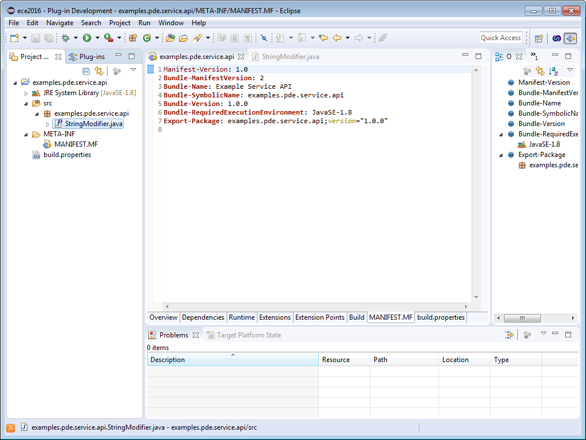
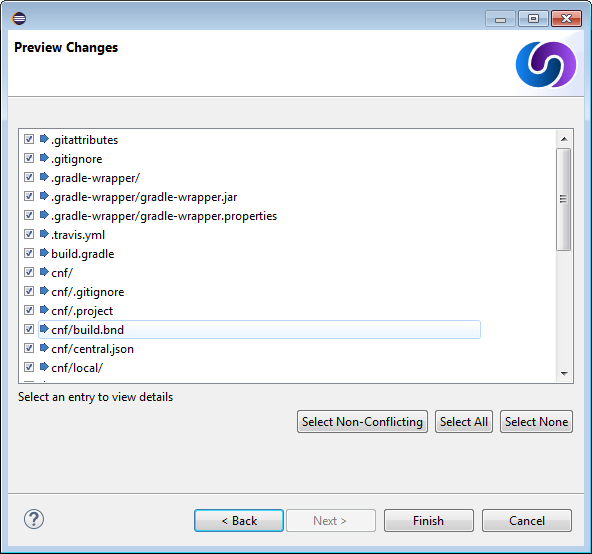
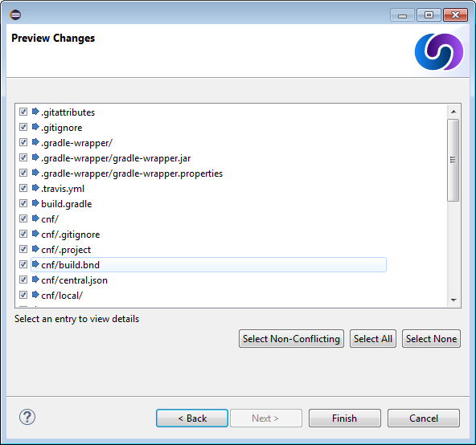
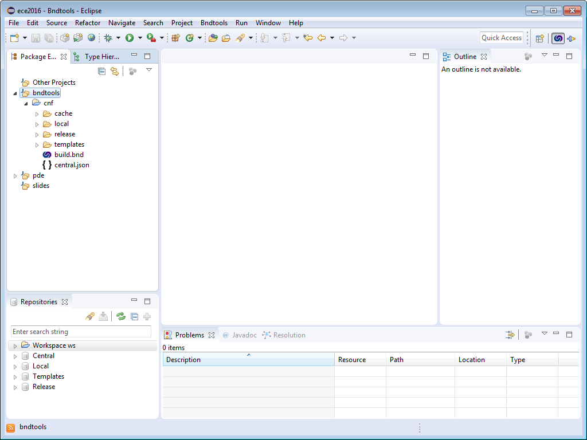
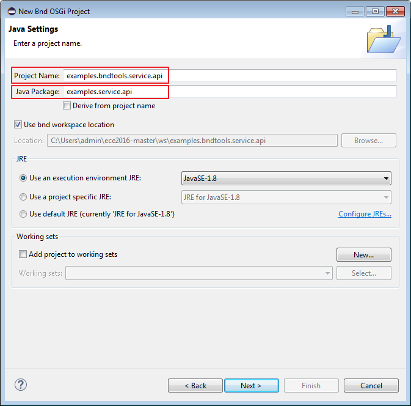
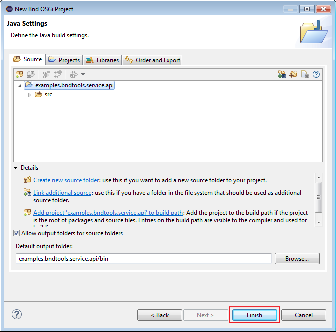
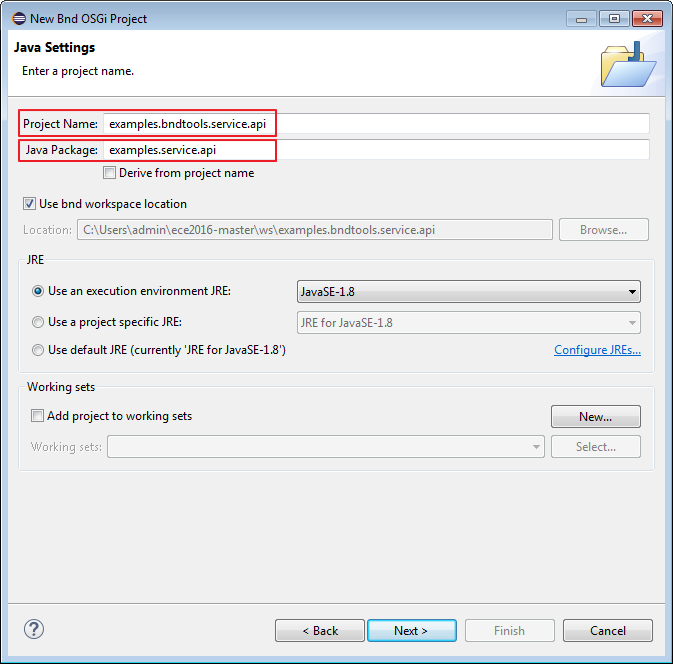
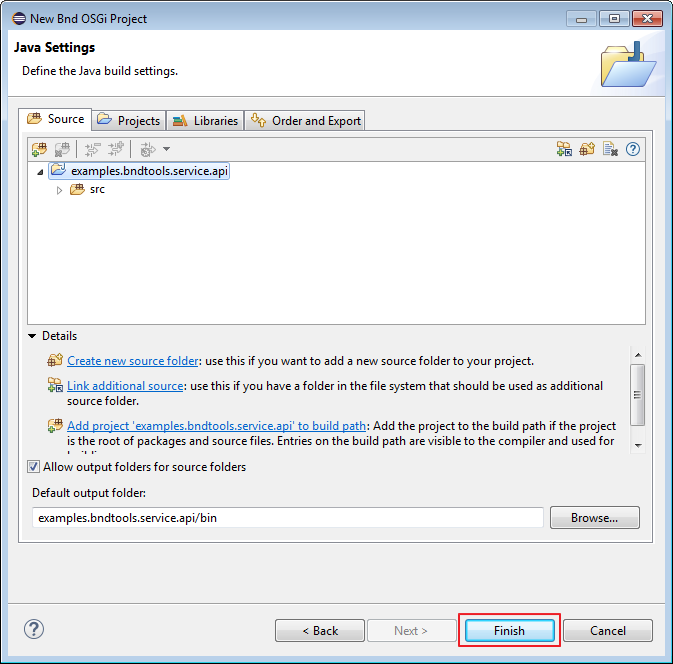

Building Nano Services
with OSGi Declarative Services
created by
Dirk Fauth and Peter Kirschner
EclipseCon Europe 2016
Schubartsaal
October 25, 2016 - 09:00 to 12:00
Compare bndtools and PDE 1/2
| topic | bndtools | PDE |
|---|---|---|
| Manifest Handling | generated | explicit editing |
| BSN, im-/export package versions | implicit conventions | explicit properties |
| Package Imports | bytecode-based import calcualation | manual triggered import calculation |
Compare bndtools and PDE 2/2
| topic | bndtools | PDE |
|---|---|---|
| Launch defaults | clean,hot bundle-deploy | persisted, no update |
| Bundle handling | instant bundle creation | IDE uses "virtual bundles" |
| one eclipse project | can become multiple bundles | one bundle |
PDE - create project
- select from menu:
File -> New -> Plug-in Project - provide as Project name:
examples.pde.service.api


PDE - create API interface package
copy the following snippet and paste it into src folder
package examples.service.api;
public interface StringModifier {
String modify(String input);
}
PDE - export the API package
Inside the Manifest Editor on the Runtime Tab
export the package with version 1.0.0
PDE - Service API Bundle Manifest
You successfully created the Service API Bundle if your MANIFEST.MF look like this.
bndtools - create workspace
select from menu:
File -> New -> Bnd OSGi Workspace
GitHub -> bndtools/workspace
 

bndtools - verify workspace
The Repositories view contains entries, as shown below.
bndtools - create API project and interface package
File -> New -> Bnd OSGi Project- Project Name:
examples.bndtools.service.api - Java Package:
examples.bndtools.service.api
 



bndtools - update API interface
- copy the following snippet and paste it into src folder
- delete the Example*Interface.java files in the package
package examples.service.api;
public interface StringModifier {
String modify(String input);
}
bndtools - adding additional Manifest properties
- Inside the Bnd Editor on the Source Tab add
Bundle-Name: Example Service API
bndtools - investigate generated bundle
- you successfully created the Service API Bundle
- investigate
<prj>/generatedfolder